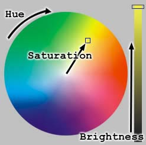
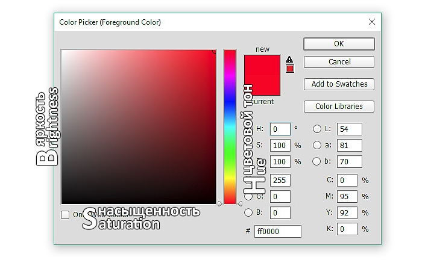

Урок 10. Формирование изображения на экране компьютера
Перечень рассматриваемых вопросов:
- Понятия: пространственного разрешения монитора, глубины цвета, пикселя.
- Знакомство с цветовой моделью RGB.
- Формулы для нахождения объёма памяти и количества цветов в палитре.
- Решение типовых задач.
Тезаурус:
Пиксель – наименьший элемент дисплея, формирующий изображение.
Пространственное разрешение монитора – это количество пикселей, из которых складывается изображение на экране.
Глубина цвета – длина двоичного кода, который используется для кодирования цвета пикселя.
Цветовая модель RGB: Red – красный, Green – зелёный, Blue – синий.
Формулы, которые используются при решении типовых задач:
N = 2i
I = K · i
где N – количество цветов в палитре, i – глубина цвета, K – количество пикселей в изображении, I – информационный объём файла.
Теоретический материал для самостоятельного изучения
Когда мы включаем компьютер, перед нами открывается рабочий стол – картинка на экране монитора. А задумывались ли мы когда-нибудь, как формируется изображение на экране монитора, сколько цветов оно может в себя включать? Скорее всего, нет. Вот сегодня на уроке мы узнаем, как формируются такие изображения, познакомимся с понятием пространственное разрешение монитора, выясним, из каких базовых цветов строятся изображения и введём новое понятие – глубина цвета.
Так вот, изображение на экране монитора образуется из отдельных точек, которые называются пикселем, что в переводе с английского означает элемент изображения. Эти точки на экране монитора образуют строки, а всё изображение строится из определённого количества таких строк.
Общее количество пикселей, из которых складывается изображение на экране монитора, называется пространственным разрешением монитора. Чтобы его определить, нужно количество строк изображения умножить на количество точек в строке.
Пространственное разрешение монитора может быть различным: 800 на 600, 1280 на 1024. Это означает, что изображение на экране монитора состоит из 800 строк, каждая из которых содержит 600 пикселей.
Чем больше маленьких точек в изображении, тем чётче оно будет выглядеть – это изображение высокого разрешения. А изображение низкого разрешения состоит из меньшего количества крупных точек, и поэтому оно получается нечётким.
На самом деле пиксель – это три очень маленьких точки красного, зелёного и синего цвета, но они расположены настолько близко друг к другу, что наши глаза воспринимают их как единое целое. Пиксель принимает именно тот цвет, который является наиболее ярким. Именно из этих трёх цветов образуется цветовая модель RGB. Название такое она получила неспроста, это первые буквы английских названий цветов: Red – красный, Green – зелёный, Blue – синий.
В этой цветовой модели каждый базовый цвет имеет один из 256 уровней интенсивности. Если менять яркость базовых цветов, то можно увидеть, как меняется окраска картинки.
Первые цветные мониторы могли использовать лишь восемь цветов: чёрный, синий, зелёный, голубой, красный, пурпурный, жёлтый и белый. Каждый цвет кодировался цепочкой из трёх нулей и единиц, то есть, трёхразрядным двоичным кодом.
Современные же компьютеры имеют достаточно большую палитру, где количество цветов зависит от того, сколько двоичных разрядов отводится для кодирования цвета одного пикселя.
Длина такого двоичного кода, который можно использовать для кодирования цвета пикселя, называется глубиной цвета.
Количество цветов в палитре связано с глубиной кодирования формулой N = 2i.
Изображения в памяти компьютера хранятся в виде файлов, их информационный объём вычисляется как произведение количества пикселей, имеющихся в изображении, и глубины кодирования: I = K · i.
Решим такую задачу.
Рассчитайте объём файла графического изображения, который занимает весь экран монитора с разрешением 800 на 600 и палитрой 256 цветов.
Так как палитра состоит из 256 цветов, то можно рассчитать глубину цвета по формуле N = 2i. Получаем глубину цвета равную восьми.
Теперь, по формуле I = K · i, найдем объём файла.
Объём получился 3840000 бит, переведём его в килобайты, для этого
3840000 разделим на 8 и разделим на 1024. Получилось примерно 469 Кб.
Решение:
Дано:
N = 256
K = 800 · 600
I = ?
Решение:
N = 2i
256 = 2i, i = 8 бит
I = K · i
I = 800 · 600 · 8 = 3840000 бит = 3840000 : 8 : 1024 = 469 Кб
Ответ: 469 Кб.
Итак, сегодня мы узнали, как формируются изображения на экранах мониторов, познакомились с понятием пространственное разрешение монитора. Выяснили, что каждый пиксель имеет определённый цвет, отсюда формируется цветовая модель RGB. Познакомились с новой величиной, такой как глубина цвета. Записали формулы для решения задач по новой теме.
Цветовая модель HSB
При работе в RGB работа режимов наложения цветового тона, насыщенности и яркости базируется на модели HSB. Заглавные буквы здесь не соответствуют никаким цветам.
Hue переводится как Цветовой тон, Saturation – Насыщенность, Brightness – Яркость.
Все цвета располагаются по кругу, и каждому соответствует свой градус.

Работая с насыщенностью, мы как бы добавляем в спектр белой краски, поэтому она становится хуже, картинка делается более блёклой.
Работая с яркостью, в спектр добавляется больше чёрного цвета. И чем его больше, тем рисунок становится более тёмным, яркость уменьшается.
Цветовой тон при этом остаётся прежним.

Перемещая ползунок, мы регулируем яркость, если двигаем его по горизонтали, то изменяется насыщенность, а сам цвет не меняется
Основной задачей данной модели является правка оттенков выбранных цветов.
Модель HSB – это пользовательская цветовая модель, которая позволяет выбирать цвет традиционным способом. Она намного беднее рассмотренной ранее RGB, так как позволяет работать всего лишь с 3 миллионами цветов.